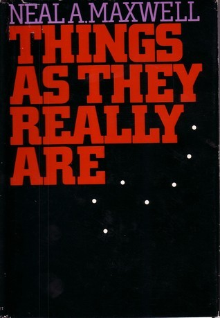

Things as They Really Are
⭐️⭐️⭐️⭐️⭐️
Format: 📖 (127 pages)
I loved this book and the clarity with which Elder Maxwell speaks/writes. As a demonstration of how much I liked it, I have 45 little tabs sticking out of the book, marking quotes and points I particularly liked. Elder Maxwell best summarizes what this book is about in the opening paragraphs:
This book is an intense treatment of a vital subject. Unlike portions of the author's previous books that focused on various dimensions of the gospel with discussions of the many insights it provides to us that are essential for coping with reality, this book attempts to probe reality itself—the very center of the gospel plan—the things that matter most, on which everything else hangs, and around which everything else must assemble.
The gospel of the Lord Jesus Christ gives us many truths, exceptional beauties, and innumerable blessings, but at its center are certain truths that reflect a stunning simplicity. There is, to be sure, a certain stark beauty about these reassurances, but one must not make the mistake of believing in them just because they are attractive; they are to be believed in because they are true, and for no other reason.
Tied irrevocably together, these eternal verities—that there really is the living God; there really is the living Church; there really are living prophets; there really are living scriptures; and there really will be a resurrection with a judgment—comprise the very center of reality.
For some, these truths are hard doctrines. They call for hard decisions. Really believed in, they require significant adjustments in one's life, a spartanizing of the soul, for within their simplicity and relentlessness is a compelling urgency that will not go away.
In the chapters to follow, each of these realities receives individual attention. The scriptures have been searched and the extractions shaped so as to underscore them. The illumination from these truths lights up the landscape of this life and what precedes and follows it, showing what would not be fully visible otherwise. We may still choose to look away, but the realities thus disclosed will not go away.
Although not a large book (in number of pages), I found the clarity in his speaking to be best taken in chunks at a time. Really, what a great book.
- Prior: The Emperor's Soul
- Next: A Memory of Light